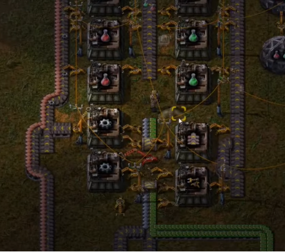
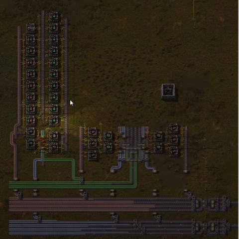

Производство красных и зелёных колб
В прошлый раз мы доделали все исследования с красными колбами. Теперь пришло время начинать изготавливать одновременно красные и зелёные колбы. Их производство проще совместить, так как исследований нас ждёт очень много.
Производить их будем по схеме, которая показана на фотографии ниже.
Сначала мы производим шестерёнки, конвейеры и манипуляторы, а уже их берём в сборочные автоматы по производству колбочек.
В итоге получаем центральный конвейер, в котором по левой стороне идут зелёные колбы, а по правой - красные.


На выходе из центрального конвейера мы ставим ряд лабораторий. Напоминаю, чем больше, тем лучше! И начинаем изучать все исследования по порядку. Изучается это всё долго, ресурсов требуется много